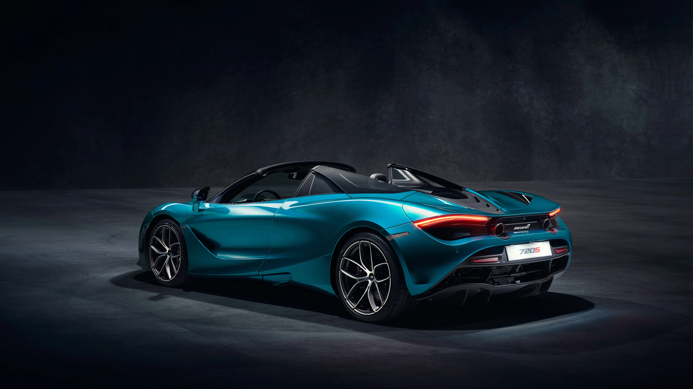
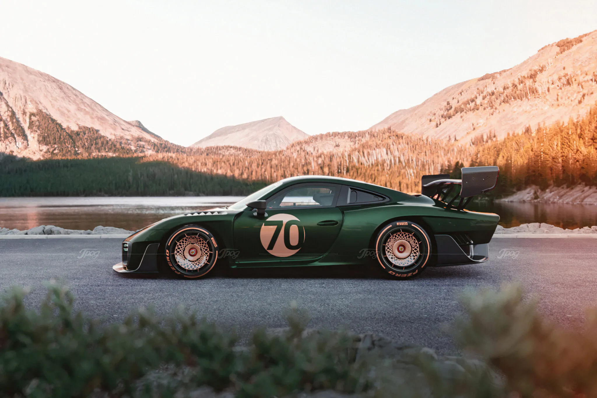

DESCRIPTION: Lamborghini is an Italian brand and manufacturer of luxury sports cars and is owned by the Volkswagen group. The logo is attributed to the brand founder Ferruccio Lamborghini whose penchant for Spanish bullfighting sport has taken its shape in the logo. Even though Lamborghini was not meant to be a racing car brand, these cars have won many races. Compared to other supercar brands, Lamborghini is almost new in the car industry but has left others behind. The high-end performance, design and comfort of these supercars make them extremely special.
Price = ₦ 100,000,000
2. AUDI
DESCRIPTION: The Audi RS 4 is the high-performance variant of the Audi A4 range produced by Audi Sport GmbH for AUDI AG, a division of the Volkswagen Group. It sits above the Audi S4 as the fastest, most sports-focused car based on the A4's "B" automobile platform. The RS 4 was reintroduced in 2012, based on the A4 Avant instead of the sedan as did the original model.
Price = ₦ 100,000,000
3. Mercedez
DESCRIPTION: The Mercedes-Benz SLS AMG (C197 / R197) is a front mid-engine, 2-seater, limited production grand tourer developed by the Mercedes-AMG division of German automotive manufacturer Mercedes-Benz, with the assistance of David Coulthard.[4] The car is the successor to the Mercedes-Benz SLR McLaren and was described by Mercedes-Benz as a spiritual successor to the Mercedes-Benz 300SL Gullwing, mainly because it was inspired by the latter.[5] SLS stands for "Super Leicht Sport" (Super Light Sport).
Price = ₦ 100,000,000
4. MC Lauren

DESCRIPTION: The McLaren 720S is a sports car designed and manufactured by British automobile manufacturer McLaren Automotive. It is the second all-new car in the McLaren Super Series, replacing the 650S beginning in May 2017.
Price = ₦ 100,000,000
5. Porsche

DESCRIPTION: The Porsche 935 is a race car that was developed and manufactured by German automaker Porsche. Introduced in 1976 as the factory racing version of the 911 (930) Turbo and prepared for FIA-Group 5 rules, it was an evolution of the Carrera RSR 2.1 turbo prototype, the second place overall finisher in the 1974 24 Hours of Le Mans.
Price = ₦ 100,000,000
6. Nissan GT R Nismo
DESCRIPTION: The Nissan GT-R (Gran Turismo–Racing; model code: R35; Japanese: 日産・GT-R; Nissan GT-R) is a car built by Japanese marque Nissan since 2007. It has a 2+2 seating layout and is considered both a sports car and a grand tourer. The engine is front-mid mounted and drives all four wheels. It succeeds the Nissan Skyline GT-R, a faster variant of the Nissan Skyline. Although this model was the sixth-generation to bear the GT-R name, it is no longer part of the Skyline line-up. The car is built on the PM platform, derived from the FM platform used in the Skyline and Nissan Z models. Production is conducted in a shared production line at Nissan's Tochigi plant in Japan.